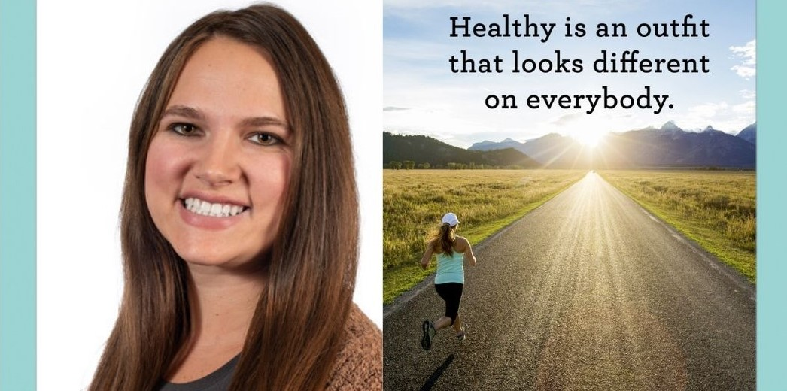

My name is Sara Bridgewater and I work for the University of Missouri Extension.
For college, I attended Missouri State University. In 2015, I graduated with
my Bachelor of Science in Health Services. In 2017, I graduated with my
Master’s in Public Health. Currently, I am pursuing my Ph.D. in Learning,
Teaching, and Curriculum, with an emphasis in Science Education and Online
Learning at the University of Missouri. I am certified in many health programs,
including Tai Chi and Walk With Ease. I am a Nutrition and Health Specialist and
serve three rural counties in Missouri. I strive to help people and families live
healthier lifestyles and connect with their community. Daily I provide nutrition
and health programming to the counties I serve. Every day I get to serve, work
with volunteers, and give back to the community I grew up in.

Education Background
| University |
Degree |
Graduation Year |
| Missouri State University |
Bachelor's of Science in Health |
December 2015 |
| Missouri State University |
Master's of Public Health |
May 2017 |
| University of Missouri |
Ph.D. in Learning, Teaching, and Curriculum |
In Progress |
Click to View Resume
“I follow three rules: Do the right thing, do the best you can, and always
show people you care.” Lou Holtz

sbridgewater@missouri.edu

1-888-888-8888
© Copyright 2021 Sara Bridgewater